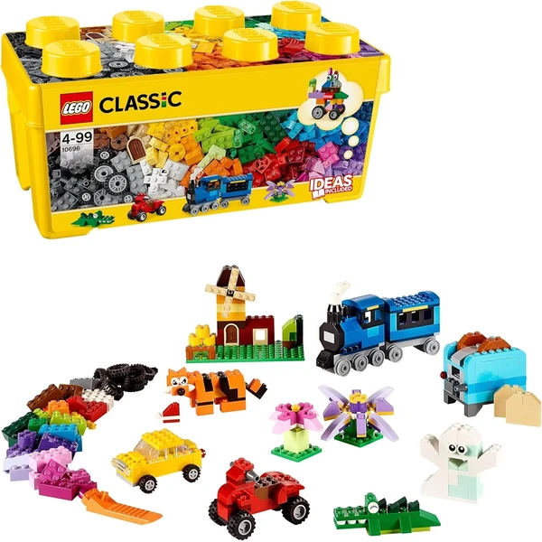
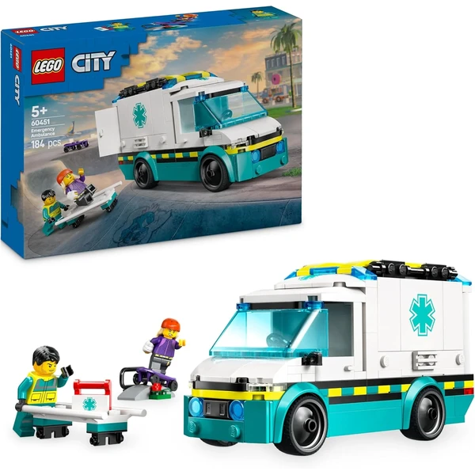
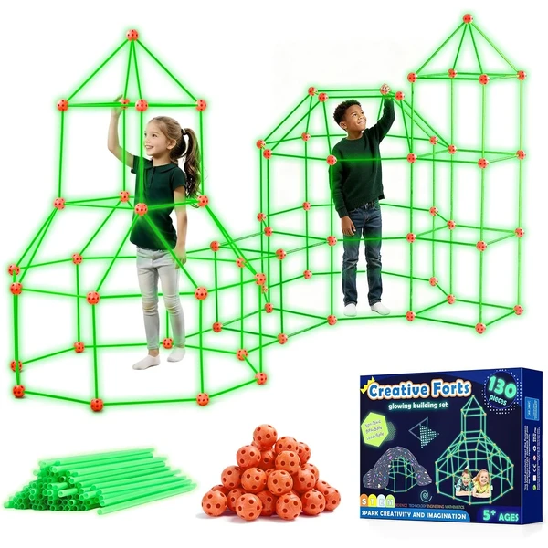
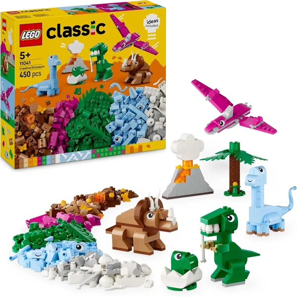
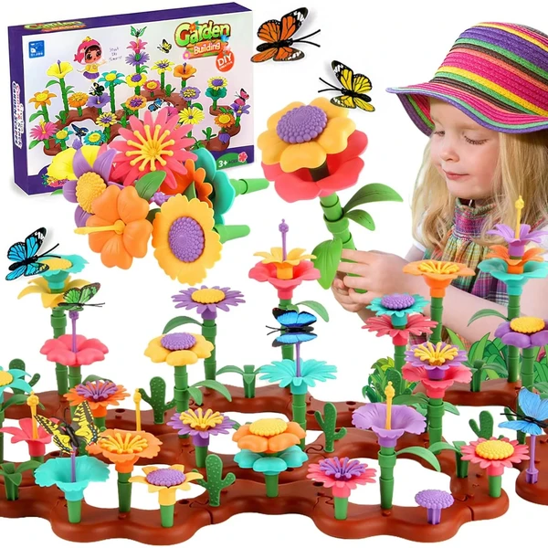
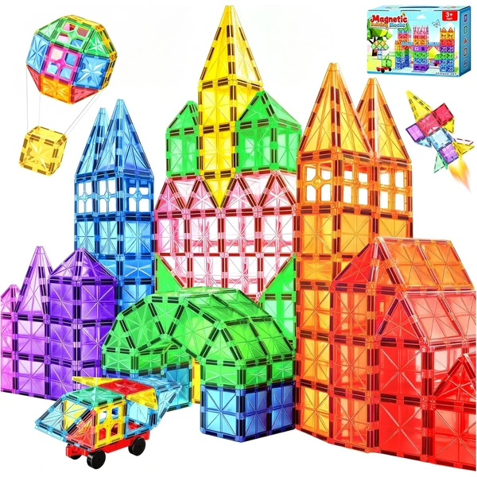

LEGO Classic Caja de Ladrillos Creativos Mediana
Una caja con ladrillos LEGO de 35 colores distintos y piezas especiales como ruedas, ventana y ojos, con una base verde incluida para empezar a construir coches, casas o animales.
⭐ ¿Por qué nos gusta?
- ✔ 35 colores distintos de ladrillos.
- ✔ Incluye base verde y caja de almacenaje.
- ✔ Combinable con el resto de sets LEGO Classic.
💬 Lo que más destacan las familias
Muchos padres coinciden en que lo mejor es la libertad que da: al no seguir instrucciones fijas, cada niño acaba construyendo algo distinto y vuelve a la caja una y otra vez. También gusta que las piezas combinen con otros sets LEGO Classic que ya tengan en casa.
Ver en Amazon

LEGO City Ambulancia de Emergencias
Un set de construcción con una ambulancia, una rampa de skate y dos minifiguras (un paramédico y un patinador), con maletín médico y accesorios para jugar a rescates.
⭐ ¿Por qué nos gusta?
- ✔ Incluye 2 minifiguras y accesorios médicos.
- ✔ Puertas y paneles que se abren de verdad.
- ✔ Fomenta el juego de rol de rescate.
💬 Lo que más destacan las familias
Los compradores valoran especialmente que las puertas y compartimentos se abran de verdad, algo que engancha mucho a los niños a la hora de jugar. La camilla y el maletín médico también dan pie a que inventen sus propias historias de rescate.
Ver en Amazon

LEGO City Lancha de Rescate de Bomberos
Un set con una lancha motora y una zodiac que flotan de verdad en el agua, más una mochila propulsora y 3 minifiguras de bomberos, para jugar a misiones de rescate acuático.
⭐ ¿Por qué nos gusta?
- ✔ Las embarcaciones flotan de verdad en el agua.
- ✔ Incluye 3 minifiguras y mochila propulsora.
- ✔ Guía de construcción digital interactiva disponible.
💬 Lo que más destacan las familias
Lo que más suele gustar es que las embarcaciones flotan de verdad, así que el juego se puede llevar a la bañera o a la piscina y no se queda solo en la mesa. Los niños disfrutan especialmente montando las misiones de rescate con las minifiguras.
Ver en Amazon

Tiny Land Kit de Construcción de Fuertes
Un kit de 130 piezas que brillan en la oscuridad para construir fuertes gigantes con una manta o sábana por encima, con 5 modelos de ejemplo y una mochila para guardarlo todo.
⭐ ¿Por qué nos gusta?
- ✔ Las piezas brillan en la oscuridad.
- ✔ 5 modelos de fuertes incluidos como guía.
- ✔ Resistente para sostener una manta o sábana.
💬 Lo que más destacan las familias
No es raro encontrar comentarios sobre lo bien que aguantan las piezas el peso de una manta o sábana, algo que sorprende para tratarse de un kit pensado para niños. El detalle de que brillen en la oscuridad también triunfa, porque convierte el fuerte en un rincón especial para jugar por la noche.
Ver en Amazon

LEGO Classic Dinosaurios Creativos
Un set de LEGO Classic para construir un Tiranosaurio Rex, un Triceratops, un Pterosaurio y un huevo de dinosaurio, con piezas especiales como ojos y un volcán de juguete.
⭐ ¿Por qué nos gusta?
- ✔ Varios modelos de dinosaurio para construir.
- ✔ Incluye volcán y huevo de dinosaurio de juguete.
- ✔ Guía paso a paso incluida.
💬 Lo que más destacan las familias
Entre los comentarios más habituales aparece lo mucho que disfrutan los niños fanáticos de los dinosaurios al poder montar varios modelos distintos con las mismas piezas. El volcán y el huevo de juguete también se llevan buena parte de los elogios, porque suman un extra de juego una vez terminada la construcción.
Ver en Amazon

wohot Juego de Construcción Jardín de Flores
Un set de 144 piezas intercambiables de flores, tallos y hojas para montar cientos de combinaciones distintas de ramos y jardines, con piezas fáciles de encajar y desmontar.
⭐ ¿Por qué nos gusta?
- ✔ 144 piezas intercambiables entre sí.
- ✔ Cientos de combinaciones florales posibles.
- ✔ Piezas lavables y fáciles de limpiar.
💬 Lo que más destacan las familias
Se repite bastante el comentario de que engancha especialmente a los niños a los que no les llaman tanto los sets de construcción más técnicos, gracias a lo satisfactorio que resulta combinar flores y colores. El resultado final suele acabar expuesto en su habitación, lo que añade un punto extra de orgullo.
Ver en Amazon

Bloques Magnéticos 67 piezas
Un set de 67 piezas magnéticas translúcidas con cuadrados, triángulos, arcos de ventana y una base con ruedas, para construir desde castillos hasta vehículos en movimiento.
⭐ ¿Por qué nos gusta?
- ✔ Incluye base con ruedas para vehículos.
- ✔ Imanes potentes, estructuras estables.
- ✔ Caja de almacenamiento con asa incluida.
💬 Lo que más destacan las familias
Quienes lo han probado destacan que el clic magnético al encajar las piezas resulta muy satisfactorio y anima a seguir construyendo. También gusta que se pueda pasar de una torre plana a un vehículo en movimiento simplemente añadiendo la base con ruedas.
Ver en Amazon